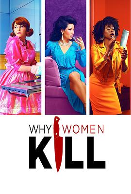

致命女人 第一季 / Why Women Kill Season 1
又名：女人为何杀人 / 女人杀人为哪般 / 女性杀人动机 / 美国女子屠鉴 / 女子杀人动机 / 靓太杀机
希拉太棒啦
作品信息
| 导演 | 大卫·格罗斯曼 / 刘玉玲 / 马克·韦布 / 大卫·沃伦 / 伊丽莎白·艾伦 / 瓦莱丽·韦斯 / 道恩·威尔金森 |
| 编剧 | 马克·切利 / 艾莉莎·荣格 / 乔·基南 / 兰迪·梅耶姆·辛格 / 玛丽·伊丽莎白·汉密尔顿 / 奥斯汀·古兹曼 / 柯蒂斯·凯尔 / 格雷格·马林斯 / 汉娜·施耐德 / 布伦丹·斯蒂芬 / 杰夫·斯特劳斯 |
| 主演 | 刘玉玲 / 金妮弗·古德温 / 柯尔比·豪威尔-巴普蒂斯特 / 杰克·达文波特 / 山姆·贾格 / 瑞德·斯科特 / 亚历山德拉·达达里奥 / 赛迪·卡尔瓦诺 / 里奥·霍华德 / 艾丽莎·科波拉 / 凯蒂·芬内朗 / 凯文·丹尼尔斯 / 琳赛·卡夫 / 里奥·蒂普顿 / 李丽君 / 菲利普·安东尼-罗德里格斯 / 斯科特·波特 / 亚当·费拉拉 / 斯宾塞·加雷特 / 罗伯特·甘特 |
| 类型 | 剧情 / 喜剧 / 犯罪 |
| 制片国家/地区 | 美国 |
| 语言 | 英语 |
| 首播 | 2019-07-21(洛杉矶LGBT电影节) / 2019-08-15(美国) |
| 季数 | 1 |
| 集数 | 10 |
| 单集片长 | 45分钟 |
| IMDb | tt9054904 |
最后一次看到是 2026-08-12T21:11:38+08:00 · 豆瓣原页